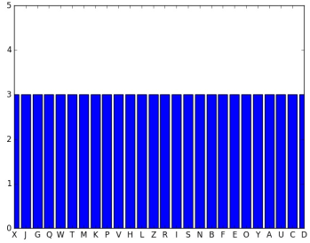
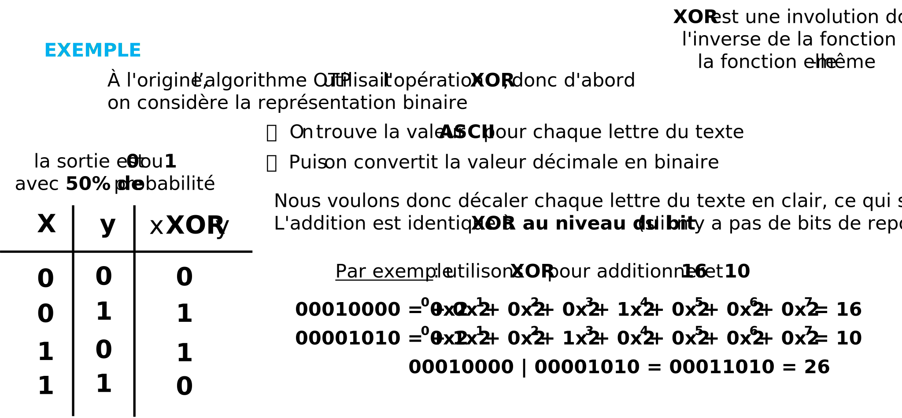
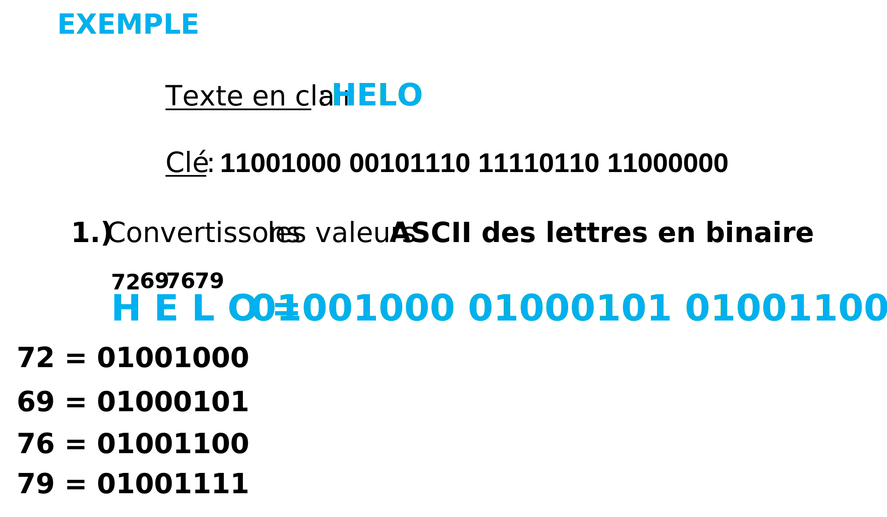
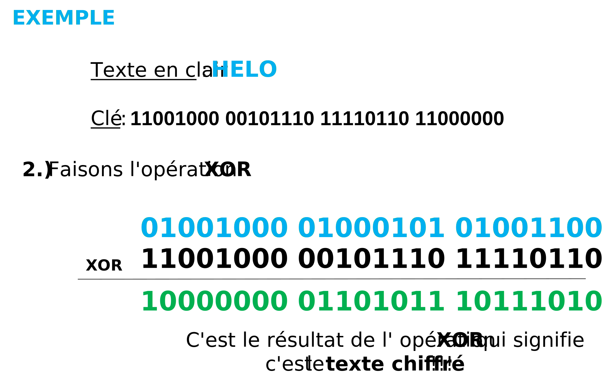
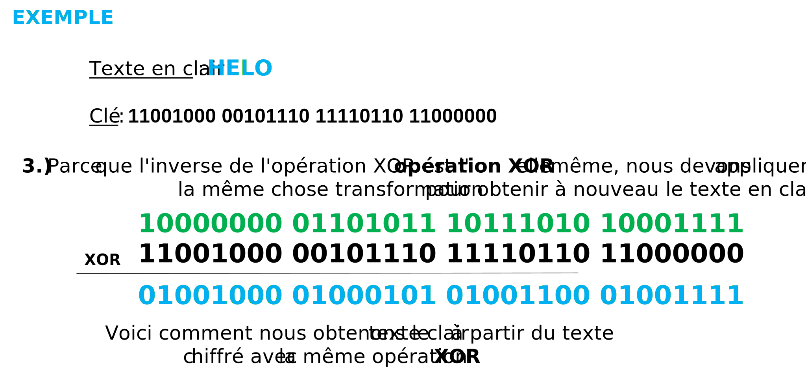

Chiffrement Vernam
Il a été construit pour la première fois par Frank Miller en 1882. Dans ce cryptosystème, nous utiliserons autant de lettres dans la clé que la longueur du texte en clair.
Pour empêcher la Fuite d'Informations nous allons utiliser des nombres totalement aléatoires pour décaler les lettres dans le texte en clair, donc la clé doit avoir la même taille que le texte en clair et la clé doit contenir des nombres aléatoires.
Commençons par l'algorithme, nous générons une séquence aléatoire (autant de nombres aléatoires que de lettres dans le texte en clair) ce qui signifie que nous ne devons pas réutiliser les mêmes nombres encore et encore. Enfin, nous décalons les lettres du texte en clair avec les nombres aléatoires de la même manière que dans le chiffrement de Vigenère ou le chiffrement de César.
Bien sûr, si nous analysons le texte chiffré avec la méthode de Kasiski, il n'y aura aucune fuite d'informations, car chaque lettre du texte chiffré est parfaitement équidistribuée.
Voici un exemple ci-dessous d'une analyse utilisant la méthode de Kasiski :


Avant de donner quelques exemples voici les formules :
- CRYPTAGE : Ei (xi) = (xi + VERNAMi) mod 26
- DÉCRYPTAGE : Di (xi) = (xi - VERNAMi) mod 26



Le principal problème en ce qui concerne le Chiffrement de Vernam est de savoir comment générer les nombres aléatoires. Malheureusement, de nos jours, nous ne pouvons toujours pas générer de vrais nombres aléatoires, nous générons donc des nombres pseudo-aléatoires et les valeurs ne sont pas indépendantes les unes des autres, donc les nombres pseudo-aléatoires peuvent se répéter et alors être prédit. C'est pourquoi il n'est pas utilisé, car sa mise en œuvre correcte est presque impossible.